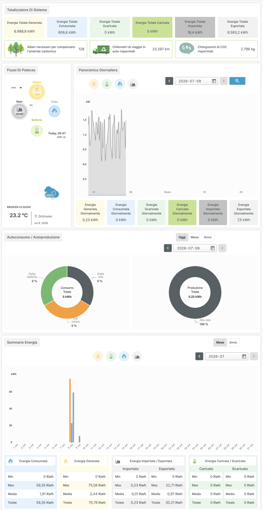
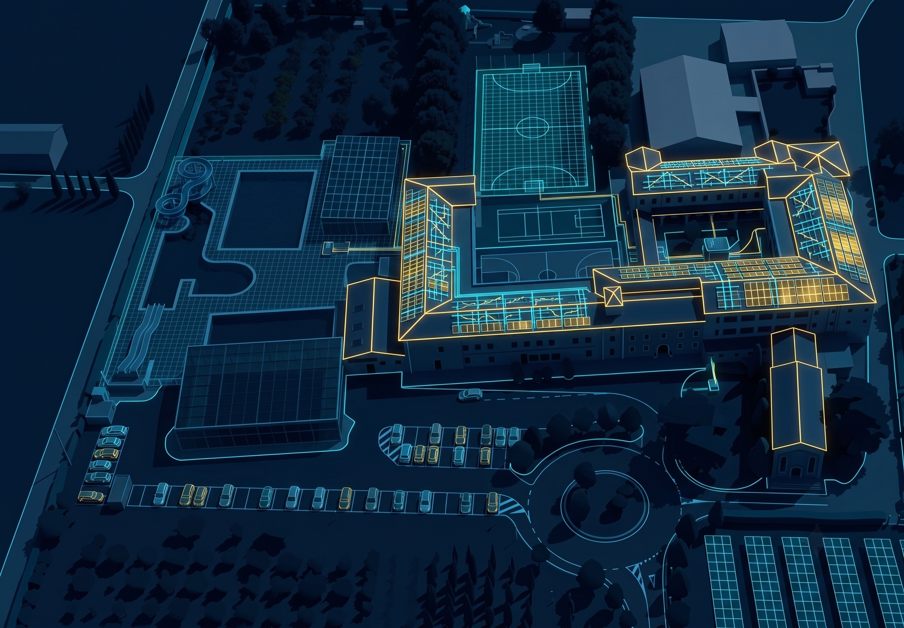

Una centrale nascosta sul tetto
Prima di ogni spiegazione, guarda con i tuoi occhi: questa è la schermata vera del computer che controlla l’impianto fotovoltaico della nostra piscina, fotografata il 9 luglio 2026 alle 05:47 del mattino.

Prima consegna: osserva
Apri la schermata e guardala per un minuto intero, come un detective. Poi scrivi qui 2 o 3 cose che noti.
- Quali unità di misura compaiono? Le conosci tutte?
- C’è un numero enorme e un numero piccolissimo: quali?
- Cosa c’entrano gli alberi, i chilometri e la CO2 con l’elettricità?
- A che ora è stata fatta questa fotografia?
Ora ascolta: com’è cominciata
Preferisci leggere? Apri il testo del racconto
C’è una centrale elettrica nella nostra scuola. Non ha ciminiere, non fa rumore, non manda fumo. Ci passi accanto tutti i giorni, e non la vedi. Per tanto tempo non l’ho vista neanche io.
Poi, una mattina d’estate — il nove luglio, alle cinque e quarantasette — ho aperto il computer che la controlla, e ho fotografato il suo pannello di controllo. È la schermata che hai davanti: ogni numero che leggi è vero.
Quella mattina la centrale aveva già cominciato a lavorare. Piano, pianissimo: il sole era sorto da pochi minuti. Ma nel suo totale, lavorando in silenzio giorno dopo giorno, aveva già prodotto quasi settemila kilowattora.
Tra tutti i numeri, però, uno mi ha incuriosito più degli altri: ventitremila duecentonovantasette. Chilometri. Chilometri? I pannelli stanno fermi, fissati sul tetto della piscina. Di quale viaggio parliamo? Ecco: questo mistero non te lo svelo adesso. Lo metto da parte, e ci torneremo, promesso.
Prima ti serve una chiave. Perché tutta quella schermata parla una lingua sola, fatta di tre lettere: kappa, doppia vu, acca. Impariamola insieme — e la centrale invisibile non avrà più segreti.
Che cos’è un kWh?
Watt, kilowatt, kilowattora: sembrano parole da ingegneri, ma funzionano come la bicicletta. Ascolta la traccia: le card si accendono man mano che la voce ci arriva.
Preferisci leggere? Apri il testo della spiegazione
Per leggere la nostra centrale devi conoscere due parole: potenza, ed energia. Sembrano uguali, ma non lo sono. E te lo spiego con la bicicletta.
La potenza è quanto stai spingendo sui pedali in questo preciso momento: puoi pedalare piano, o dare tutto in salita. Si misura in watt. Una lampadina led spinge pochissimo: dieci watt. Un asciugacapelli invece sprinta: duemila watt.
L’energia, invece, è tutta la strada che hai fatto pedalando: il lavoro completo, dall’inizio alla fine. E si misura in kilowattora.
La regola è una sola, tienila stretta: un kilowattora è il lavoro di mille watt che spingono per un’ora intera. Il contatore di casa tua conta esattamente questo.
E adesso la domanda vera: un kilowattora è tanto, o è poco? Pensa: con un solo kilowattora ricarichi il tuo iPad più di trenta volte. Oppure tieni accesa una lampadina led per cento ore. Oppure fai sei chilometri con un’auto elettrica.
Attento però alla trappola: kilowatt e kilowattora non sono la stessa cosa. Il kilowatt è la spinta di adesso; il kilowattora è la strada fatta. Chi li confonde legge i numeri al contrario. Tu, da oggi, non li confonderai più.
Il convertitore: quanto vale un kWh nella tua vita?
Scegli una quantità di energia (o scrivila tu) e guarda cosa ci potresti fare davvero.
Valori arrotondati, calcolati con consumi tipici: servono per farsi un’idea, non per fare l’ingegnere (per ora).
Stasera, a casa, cerca l’etichetta con i watt su tre apparecchi diversi (caricabatterie, phon, microonde, lampada…). Scrivili sul diario e portali domani: costruiremo la classifica dei «pesi massimi» della classe. Chi troverà l’apparecchio più potente? E quello più parsimonioso?
Quanta energia consumi in un giorno?
Ora che sai cos’è un kWh, usalo su di te. Per ogni apparecchio trascina lo slider per stabilire quanto tempo lo usi in una giornata: il consumo è potenza × tempo, quindi più lo tieni acceso più la barra cresce. In fondo trovi il totale e quanto costa. Attento ai «pesi massimi»!
Guarda i pesi massimi che ti segnala il riquadro qui sopra: sono gli apparecchi con più kWh. Scegline uno e prova a ridurne il tempo trascinando lo slider (asciugacapelli più corto? climatizzatore un’ora in meno?): guarda di quanto scendono i kWh e gli euro. Scrivi sul diario la tua mossa di risparmio. Domani in classe confrontiamo i totali: chi ha la giornata più leggera?
Il cruscotto della nostra centrale
Adesso che parli la lingua dei kWh, torniamo alla schermata vera. Ogni parola del portale descrive un viaggio diverso dell’energia.
Il viaggio dell’energia
I quattro numeri da saper leggere
E quei chilometri misteriosi? Il loop si chiude
Il portale traduce l’energia pulita in tre immagini. Ecco il trucco: ogni kWh prodotto dal sole evita di produrne uno bruciando gas o carbone, e quindi evita circa 0,4 kg di CO2. Da lì nascono tutti e tre i numeri verdi:
Come si calcola?
Come si calcola?
Come si calcola?
Il gioco del detective dei dati
Un buon lettore di dati non si ferma ai numeri: si fa domande. Prova a rispondere prima di aprire l’indizio — e attenzione: non chiediamo mai «di chi è la colpa», ci chiediamo che cosa non torna e perché.
Caso n. 1 — Alle 05:47 la produzione del giorno era solo 0,23 kWh. L’impianto è guasto?
Indizio: guarda l’ora della fotografia e chiediti: da quanto tempo c’era luce?
Il sole era sorto da pochissimo: la giornata di lavoro dei pannelli era appena cominciata. Un dato si legge sempre insieme al suo momento. Lo stesso numero, alle 18:00, avrebbe raccontato una storia completamente diversa.
Caso n. 2 — L’energia esportata (8.593 kWh) è più grande di quella generata (6.988 kWh). Com’è possibile?
Indizio: chi conta queste due cose? È lo stesso strumento? È partito nello stesso momento?
Questo è un vero mistero da tecnici: sulla carta non potrebbe succedere, perché non puoi cedere più energia di quanta ne produci. Contatori diversi possono essere stati accesi o azzerati in momenti diversi. Qual è la domanda che faresti al tecnico dell’impianto per venirne a capo? Scrivetela in classe: le domande giuste valgono quanto le risposte.
Caso n. 3 — La scuola ha consumato 606,6 kWh ma ne ha presi dalla rete solo 18,4. Cosa significa?
Indizio: se consumi 606 e ne compri 18, da dove arriva tutto il resto?
Quasi tutta l’energia usata (circa il %) veniva direttamente dal tetto: si chiama autoconsumo, ed è il super-potere del fotovoltaico. L’energia migliore è quella che non deve viaggiare.
Chiedi a casa di poter guardare una bolletta della luce (va bene anche vecchia). Cerca la voce con i kWh del mese e portala a scuola scritta sul diario. In classe risponderemo a una domanda vera: quante famiglie potrebbe alimentare il tetto della nostra piscina?
Metti tu i pannelli sui tetti della scuola
Questa è la nostra scuola vista dall’alto, come un disegno tecnico. I tetti abilitati al fotovoltaico sono quelli evidenziati in oro: non tutti i tetti vanno bene (ombre, forma, esposizione). Trascina i pannelli dal riquadro e posali sui tetti giusti: piscina, palestra e campi restano liberi. Ogni pannello che aggiungi fa crescere la potenza dell’impianto.

Ogni pannello è da 400 W. Prima di trascinare, scegli l’orientamento con «Ruota» e disponi i pannelli in file ordinate, allineati alla falda del tetto. Tocca un pannello già posato per ruotarlo; usa «Togli l’ultimo» o «Svuota» per rimuovere. Stima: circa 1.100 kWh all’anno per ogni kWp, qui a Orzinuovi.
Riempi i tetti in oro e leggi la potenza che hai progettato. Poi rispondi sul diario: secondo te perché la piscina, il campo da calcio e la palestra non sono in oro? (pensa alle ombre, alla forma del tetto, a cosa c’è già sopra). Confronta la potenza che hai messo con i 6.988,8 kWh già prodotti dall’impianto vero.
In sala di controllo: metti in moto la centrale
Una centrale non si accende con un solo bottone: è una catena di interruttori, ognuno con il suo 0 (spento) e 1 (acceso), da chiudere nel giusto ordine. È lo stesso modo di ragionare di un computer. Chiudi la catena e vedrai l’energia iniziare a scorrere — è la stessa centrale che hai letto al Passo 1.
Il quadro comandi
Prova a spegnere un solo interruttore della catena mentre l’impianto lavora e guarda cosa succede: quale anello, se salta, ferma tutto? Scrivi sul diario la tua ipotesi di «anello debole» e verificala. È il ragionamento che fa un tecnico quando un impianto vero si spegne all’improvviso.
Caccia al sole: batti l’ingegnere
Comandi un impianto immaginario da 10 pannelli (4 kW) a Orzinuovi. Scegli stagione, meteo, inclinazione e orientamento, poi avvia la giornata: l’energia raccolta ricarica un’auto elettrica in viaggio. Ma non sei solo: sulla corsia sopra corre l’auto fantasma dell’ingegnere, che ha orientato i suoi pannelli nel modo migliore possibile. Riuscirai a starle dietro? E le sfide in fondo alla pagina, le sblocchi tutte?
1. Le tue scelte
Suggerimento da scopritori: puoi muovere le leve anche mentre il sole viaggia…
2. Il cruscotto
3. Il viaggio — partenza: Orzinuovi · corsia sopra: l’ingegnere
Le sfide del cacciatore
Si sbloccano giocando, in qualsiasi ordine. Quante ne conquisti oggi?
Domani, sulla strada per la scuola, gioca al cacciatore di tetti: scegli il tetto del paese che secondo te sarebbe perfetto per i pannelli e preparati a difendere la tua scelta in classe con due argomenti (verso dove guarda? è inclinato bene? c’è qualcosa che gli fa ombra?).
Il codice del sole: programma il pilota automatico
Nel simulatore muovevi le leve con le mani. Ma nell’impianto vero chi ci pensa? Un computer: l’inverter esegue istruzioni scritte da qualcuno — un programma. Adesso il programmatore sei tu: componi le istruzioni, eseguile, guarda il risultato, correggi. Si chiama debug, ed è quello che fanno i programmatori veri tutto il giorno.
Il pannello parte a 30° verso Sud. Poi, quando l’orologio raggiunge l’ora di un’istruzione, il pannello la esegue e resta così finché non arriva l’istruzione successiva. L’ordine conta: è una sequenza, come una ricetta.
Il tuo programma
Questo è il tuo programma scritto come lo leggerebbe l’inverter. Ogni riga è un’istruzione; l’esecuzione va dall’alto verso il basso, seguendo l’orologio.
L’esecuzione
Scrivi sul diario, a parole tue, il programma della tua giornata perfetta di domani come se fossi un inverter: «ALLE 7:00 → sveglia. ALLE 7:20 → colazione…». Domani controlla: quante istruzioni hai eseguito davvero? Dove è servito un debug?
Sei diventato un lettore di energia?
Una domanda alla volta. Se sbagli non succede niente: leggi la spiegazione e vai avanti, è così che si impara.
Cosa ho capito davvero?
Siamo partiti da una centrale che nessuno vedeva e da 23.297 chilometri misteriosi. Ora la centrale la sai leggere, quei chilometri sai spiegarli, e il pannello lo sai perfino programmare. Prima di fermarti a pensare, accendi tutto quello che hai imparato.
Accendi ciò che hai imparato
Ogni interruttore è una cosa che ora sai. Accendi solo quelle di cui sei sicuro: quante luci riesci a far brillare?
E adesso fermati a pensare
Copiate! Incollale dove ti dice il docente.Questa pagina non salva e non invia niente: le tue risposte restano tue. Se chiudi la pagina, spariscono.
La prossima volta che passi davanti alla piscina, alza gli occhi: la centrale invisibile adesso la vedi. E ogni lampadina che spegni quando esci da una stanza è un pezzetto di quel lavoro che resta disponibile per qualcun altro.
Guarda il fotovoltaico dal vero
Quattro video scelti per andare più a fondo: dentro un pannello, dentro un impianto, su fino al parco solare più grande del mondo e infine una domanda a sorpresa sul deserto. Li guardi qui, senza uscire dalla nostra sala di controllo e senza distrazioni.
Metti alla prova la tua comprensione
Dieci domande da veri esperti dell’energia. Prima scrivi la tua risposta con parole tue, poi apri la «risposta esperta» e confrontala: dov’eri già preciso? Cosa aggiungeresti? Le risposte vivono dentro i quattro video — a volte devi collegarne più di uno.
Copiate! Consegnale come ti dice il/la docente.Scegli una sola cosa che hai scoperto in questi video e che non sapevi prima. Scrivila sul diario in una frase e preparati a raccontarla alla classe: il parco di Midong è grande come… quante volte il nostro paese? Che cosa succede dentro il pannello quando lo colpisce il sole?